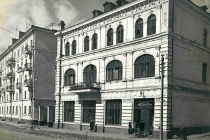

Значимые события

20 июня (2 июля) 1860 года транспорт Сибирской флотилии «Манджур» под командованием капитан-лейтенанта Алексея Карловича Шефнера доставил в бухту Золотой Рог воинское подразделение для основания военного поста, который теперь уже официально получил название Владивосток.
31 октября 1861 года во Владивосток с семьёй прибыл первый гражданский поселенец — купец Яков Семёнов. 15 марта 1862 года был зарегистрирован первый акт покупки им земли.
В 1871 году во Владивосток, из Николаевска-на-Амуре, были переведены главная морская база Сибирской военной флотилии, ставка военного губернатора и иные морские ведомства.
В 1878 г. во Владивостоке был открыт первый театральный зал «Золотой Рог».
В 1879 г. появился видоскоп (разновидность иллюзиона), где зрители смотрели «живые картинки».
В 1880 году пост официально получает статус города.
В 1887 г. был открыт Владивостокский общественный бесплатный кабинет для чтения, на базе которого в 1908 г. открылась Владивостокская городская библиотека им. Н. В. Гоголя (в настоящее время — Приморская государственная публичная библиотека им. А. М. Горького).
Указом Государственного Совета от 9 июля 1899 года был учреждён Восточный институт.
21 октября (12 октября по старому стилю) 1899 г. во Владивостоке открылся Восточный институт (в настоящее время — Дальневосточный государственный университет).
В 1900 г. было учреждено Владивостокское общество поощрения изящных искусств.